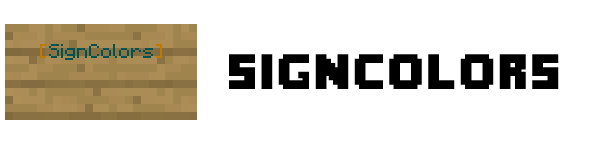
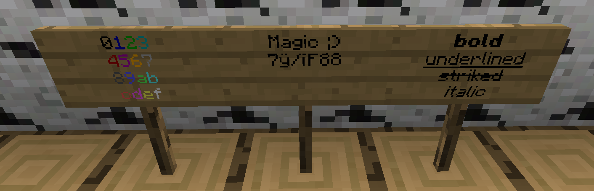
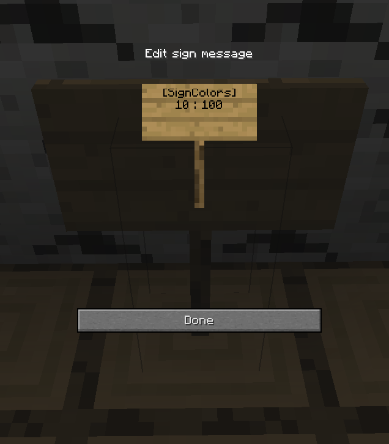
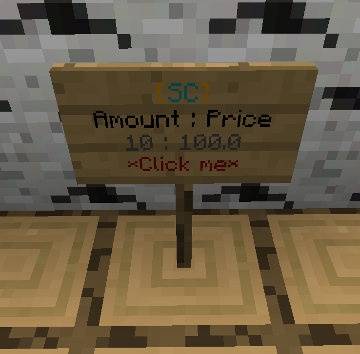

Introduction

SignColors is a Spigot plugin that allows all players on the server (or people with permissions)
to add colored text to signs.
Simply use the & character (this is configurable) followed by a hexidecimal digit (0-f)
to give the rest of the line a color and/or a format.
Features
- Players can add colors/formats to signs.
- Permissions per color/format.
- Use your own color symbol instead of
&. - Possibility to craft colored signs (recipe and type are configurable).
- Introduces a special sign (so called
[SC]sign) that allows players to buy signs where colors/formats are possible (requires Vault).- If this feature is enabled, you can only write colors/formats on an specific crafted/bought sign.
- Players get crafted colored signs back, if they destroy them.
- Database of placed colored signs is supported via SQLite or MySQL.
- Certain first lines on signs can be blocked (like
&1[Buy]from Essentials) to avoid unwanted abuse.
- Automatically checks for updates (configurable).
- English and German translations provided and additional can be added manually.
- May send metrics (configurable).
Installation
This guide take you through the initial setup (installation) of the plugin. Estimated time: 10-20 Minutes
Download
Download the plugin's JAR file here.
Put it into the plugins directory of the server.
Server Start
Start the server. After it has finishing loading, you should find a SignColors folder in the plugins directory.
Configure
You can now configure the plugin to your liking by modifying the config.yml.
Don't forget to either reload the plugin or restart server.
FINISHED
Usage
This page provides useful information on how to use the plugin's features.
How to add colors/formats to signs?
To create a colored/formatted sign, write the colorcode (default is: &) and one of the following characters
(0, 1, 2 ,3, 4, 5, 6, 7, 8, 9, a, b, c, d, e, f, k, l, m, n, o, r) in front of your text.
Of course you can write more than one color in one line.
The image below demonstrates all possible colors and formats:

How to create a [SC] sign?
Create a sign with the following content:
| Line | Text |
|---|---|
| 1. (required) | [SignColors] |
| 2. (optional) | <amount> : <price> |
Replace <amount> and <price> with your values.
If you leave them out, the default values from config will be used.
The rest is created automatically. An example sign could look like this:

After placing the sign, it will look like this:

Now players can right click on the sign and will get 10 colored signs for 100 $.
Commands
You can also use /signcolors instead of /sc.
[ ]: required argument, < >: optional argument
| Command | Permission | Description |
|---|---|---|
/sc | signcolors.command.info | Get some information about the plugin like the plugin's version |
/sc help | signcolors.command.help | List all available commands |
/sc reload | signcolors.command.reload | Reload the plugin's configuration file |
/sc givesign [player] [amount] | signcolors.command.givesign | Give a player a specific amount of colored signs |
/sc colorcodes | signcolors.command.colorcodes | List all color and formatting codes |
Permissions
| Permission | Description |
|---|---|
signcolors.all | Access to all features and command |
signcolors.command.all | Access to all commands |
signcolors.specialsign.all | Use and create special [SC] signs |
signcolors.color.all | Apply all colors on signs |
signcolors.formatting.all | Apply all formatting options on signs |
signcolors.command.info | Access to /sc |
signcolors.command.help | Access to /sc help |
signcolors.command.reload | Access to /sc reload |
signcolors.command.givesign | Access to /sc givesign |
signcolors.command.colorcodes | Access to /sc colorcodes |
signcolors.specialsign.create | Create [SC] special signs |
signcolors.specialsign.use | Use [SC] special signs |
signcolors.signcrafting.bypass | Apply colors and formatting on normal signs, although sign_crafting is activated |
signcolors.blockedfirstlines.bypass | Bypass blocked sign lines |
signcolors.updatemessage | Get a notification when joining, as soon as an update is available |
signcolors.color.0 | Access to BLACK color: &0 |
signcolors.color.1 | Access to DARK BLUE color: &1 |
signcolors.color.2 | Access to DARK GREEN color: &2 |
signcolors.color.3 | Access to DARK AQUA color: &3 |
signcolors.color.4 | Access to DARK RED color: &4 |
signcolors.color.5 | Access to DARK PURPLE color: &5 |
signcolors.color.6 | Access to GOLD color: &6 |
signcolors.color.7 | Access to GRAY color: &7 |
signcolors.color.8 | Access to DARK GRAY color: &8 |
signcolors.color.9 | Access to BLUE color: &9 |
signcolors.color.a | Access to GREEN color: &a |
signcolors.color.b | Access to AQUA color: &b |
signcolors.color.c | Access to RED color: &c |
signcolors.color.d | Access to LIGHT PURPLE color: &d |
signcolors.color.e | Access to YELLOW color: &e |
signcolors.color.f | Access to WHITE color: &f |
signcolors.formatting.k | Access to MAGIC formatting: &k |
signcolors.formatting.l | Access to BOLD formatting: &l |
signcolors.formatting.m | Access to STRIKETHROUGH formatting: &m |
signcolors.formatting.n | Access to UNDERLINE formatting: &n |
signcolors.formatting.o | Access to ITALIC formatting: &o |
signcolors.formatting.r | Access to RESET formatting: &r |
Languages
The plugins comes with built-in English and German translations. More can be added manually.
Adding a custom language
- Copy the
en_US.propertiesin thetranslationsfolder and name it after your language (e.g.fr.properties). - Adjust the translation values within the file.
- Set the
languagekey in theconfig.ymlto your language file code (e.g.frfrom the example above). - Reload the plugin or restart the server to make use of the new translations.